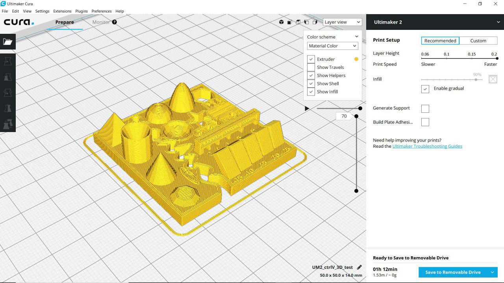
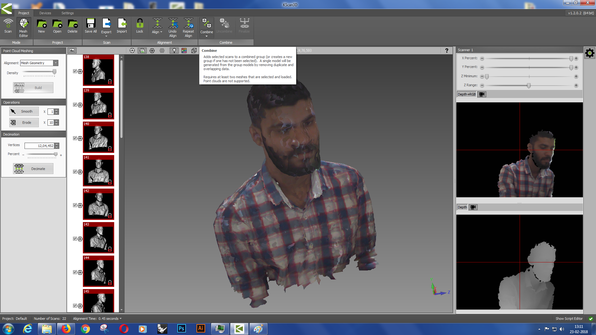

- design and 3D print an object (small, few cm)that could not be made subtractively
- 3D scan an object (and optionally print it)
Introduction
This week Professor Neil gave us a over-all Introduction about 3D printing and 3D Scanning also it's various methods .I was very exited in 3D printing.so in this week we need to print and non-subtractive model and 3D scan an object.
3D Printing
3D Printing is an additive manufacturing process that creates a physical object from a digital design. There are different 3D printing technologies and materials you can print with, but all are based on the same principle: a digital model is turned into a solid three-dimensional physical object by adding material layer by layer. In an additive process an object is created by laying down successive layers of material until the object is created. Each of these layers can be seen as a thinly sliced horizontal cross-section of the eventual object.(Source :- https://www.3dhubs.com)

There is different way to print a 3D object.
- Stereolithography(SLA)
- Fused-deposition molding (FDM)
- Material Jetting (PolyJet and MultiJet Modeling)
- Selective Laser Sintering (SLS)
This process that converts liquid plastic into solid objects.
These 3D printing technologies are also available in desktop 3D printers. Materials are limited to resins, but new varieties have appeared recently providing strength or flexibility to the final objects.SLA and DLP 3D printers produce highly accurate parts with smooth surface finishes and are commonly used for highly detailed sculptures, jewelry molds, and prototypes. Because of their relatively small size, they are not recommended for printing large objects.(Source :- https://www.3dhubs.com)
The FDM printing process starts with a string of solid material called the filament. This line of filament is guided from a reel attached to the 3D printer to a heated nozzle inside of the 3D printer that melts the material. Once in a melted state, the material can be extruded on a specific and predetermined path created by the software on the computer. As the material is extruded as a layer of the object on this path, it instantly cools down and solidifies – providing the foundation for the next layer of material until the entire object is manufactured.

As the cheapest 3D printing technology on the market, FDM also offers a wide variety of plastic-based materials in a rainbow of colors including ABS, PLA, nylon and even more exotic material blends including carbon, bronze or wood.(Source :- https://www.3dhubs.com)
Material Jetting (Stratasys PolyJet and 3D Systems MultiJet Modeling) technologies are similar to inkjet printing, but instead of jetting drops of ink onto paper, these 3D printers jet layers of liquid photopolymer onto a build tray and cure them instantly using UV light.
(Source :- https://www.3dhubs.com)
Selective Laser Sintering (SLS) uses a laser to melt and solidify layers of powdered material into finished objects.
Printing Material
The material used will affect the mechanical properties and accuracy of the printed part, but also its price. The most common FDM materials are summarized in the table below. (Source :- https://www.3dhubs.com/knowledge-base/introduction-fdm-3d-printing
In Our lab (Fablab Kochi) we have two 3D printers
- Ultimaker 2
- Diamension
Both printers are based on the Fused filament fabrication Technology
Machine Detials
Ultimaker 2
Ultimaker is a 3D printer manufacturer. Their product line includes the Ultimaker 3 family, Ultimaker 2 family and the Ultimaker Original. The company started out as an open-source printer company.Ultimaker 2 is the successor to the Ultimaker Original and was released in September 2013. MAKE magazine classified the Ultimaker 2 as the "best open-architecture 3D printer of 2014" and named it runner-up in the category "Prosumer FFF".
(Source :- https://ultimaker.com/download/5137/Factsheet-UM2Extended-v1.2.pdf
Stratasys Dimension 1200es
Dimension 1200es is an industrial grade 3D Printer by Stratasys. They make use of Stratasys' proprietary ABSplus™ modeling material, a productiongrade thermoplastic that is durable enough to perform virtually the same as production parts. This combined with a soluable support material and build volume of 25.4 x 25.4 x 30.5 cm means that the Dimension 1200es reliably provides good qulaity prints at a locked layer thckness of 254 microns.
(source :- http://usglobalimages.stratasys.com/Main/Files/Machine_Spec_Sheets/PSS_FDM_Dim1200es.pdf
Group Assignment :-
Our group assignment was to test the design rules of our printer. We used this design file from Thingiverse for the same.The following are the design specifications of this particular test file.
We Printed with twice with different parameter.
- First
- Size: the object is 4x50x50mm (baseplate)
- Hole size: 3 holes (3/4/5mm)
- Nut size: M4 Nut should fit perfectly
- Fine details: pyramid, cone, all numbers
- Rounded print: wave, half sphere
- The minimum distance between walls: 0.1/0.2/0.3/0.4/0.5mm
- Overhang: 25°/30°/35°/40°/45°
- Bridge print: 2/3/4/5/6/7/8/9mm
- Surface: all the flat parts
- Second
Parameters
In here we increased the quality .
My Experiment
Assignment was Design and 3D Print that could not be made subtractively , I started with Rhyino and Designed a like this

Here you can Download the Rhino Design File's.
After the Designing , i used Cura to slice my 3d Model
The other design from my fried
and i copy the sliced G-code file to SD card , The Estimated time is 14 hour and 00 min that's included other print , but it's a bad idea.
It's started smootly and some how filament jammed and printing was stucked.
Problem with using old Filament that's lead to Jamming
Then I printed mine only with new filament.
I replaced with a new filament same PLA Material.
Tried again Printing
No Problem so far.
Final Touch-up
Completed
Now we need to remove the Support material.
I Used
I used filer to remove the excess
Hero Shot
3D Scanning
3D Scanning is a process to convert Real 3D object to computer File.it's opposit process of 3D Design .Today there somany 3D Scanner's avilable, Depthsensor like Micorsoft Kinect and Intel Real-Sense is a good Example.
In this week am using two method to scan a 3D object , using Modela and Microsoft Xbox Kinect.
Modela
In the Electronics Production we used modela a lot for milling our PCB , the same modela we are using for Scan 3D object. but in here we changed the milling head to Scanning head.
here i,am scanning small gear.
First i Fixed the gear on the Scarificial layer using double tape insulation.

In here am Using Dr.PICZA software to scan with Modela.
First we need to set the scanning area for calibrating the Sensor and Software.
So here the Blue area is the Scanning Area and the Yellow is the tottal Ground Area.
After that i tested the Area by using the begin Test Area option after that i started scanning.
Now ,It's scanning
Completed
Here you can Download the .stl Design File.
I Exported the design file to .stl format.
The Process is very slow ,
Microsoft xbox kinect
Kinect (codenamed Project Natal during development) is a line of motion sensing input devices that was produced by Microsoft for Xbox 360 and Xbox One video game consoles and Microsoft Windows PCs. Based around a webcam-style add-on peripheral, it enables users to control and interact with their console/computer without the need for a game controller, through a natural user interface using gestures and spoken commands.
I used KScan 3D Software to scan the object
I captured tottal 23 images of mine
I used combine option to combine all the image in to single file.
Then i used Finalize option to add mesh in my design to fill the holes and missing parameters
Parameter i used for finalize
- Alignment :- Mesg Geomerty
- Smooth :- 1
- Erode :- 10
- vertices :- 945406
I used Export option and exported into .stl file format . Here you can Download the .stl Design File.
I used Cura to slice my image for genrating G-code for printing.
Started to Printing in Ultimaker 2.
I removed the Support using a knif .
Hero shot
Week-6 output
Resource
Here you can Download all the Design File's.